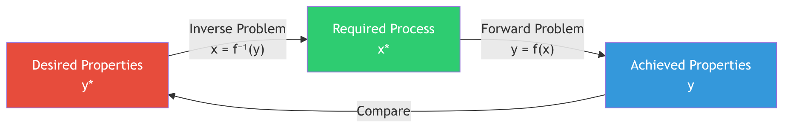
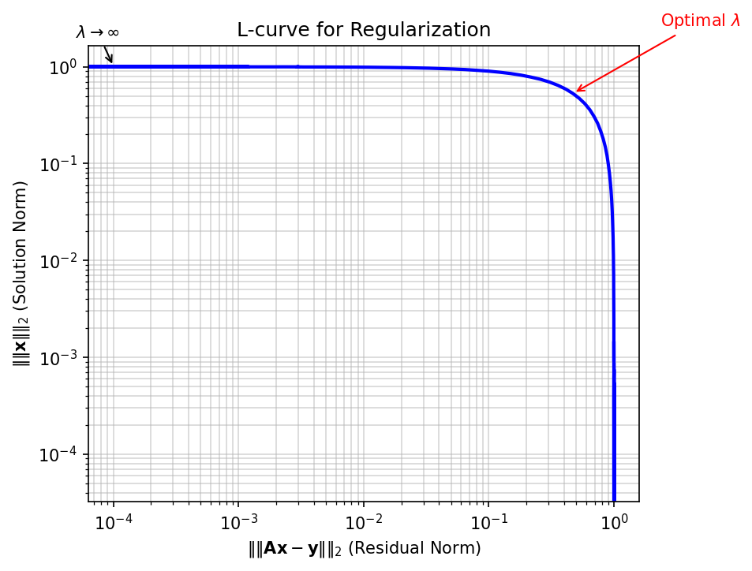
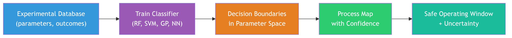
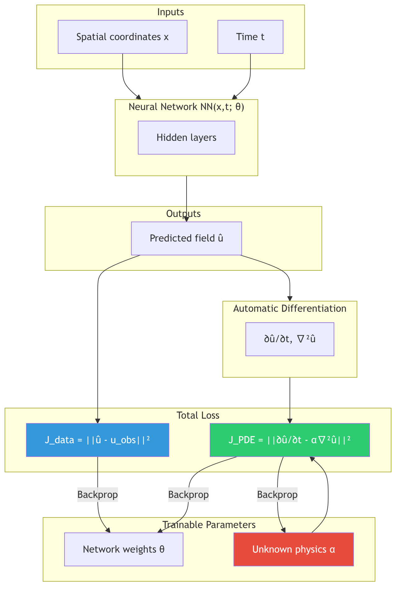
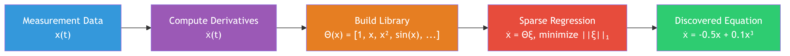

Machine Learning in Materials Processing & Characterization
Unit 8: Inverse Problems and Process Maps
FAU Erlangen-Nürnberg


01. Learning Outcomes
After this unit, you will be able to:
- Distinguish forward from inverse problems and explain why inverse problems are ill-posed
- Apply regularization strategies (Tikhonov, Bayesian priors) to stabilize inverse solutions
- Construct process maps and identify safe operating windows for manufacturing
- Formulate PINNs-based inverse problems to discover material parameters from data
- Explain the SINDy algorithm and its use for discovering governing equations from data
- Sketch how flow matching and consistency models turn inverse design into a conditional generative-sampling problem
Section 1: Forward / Inverse Duality
The Fundamental Asymmetry
02. Recap: Forward Modeling
Process → Structure → Properties
The forward problem is what we have been doing in previous units:
\[\mathbf{y} = f(\mathbf{x}) + \varepsilon\]
Given process parameters \(\mathbf{x}\), predict the resulting structure or properties \(\mathbf{y}\).
Examples:
| Input \(\mathbf{x}\) | Model \(f\) | Output \(\mathbf{y}\) |
|---|---|---|
| Laser power, scan speed | Thermal simulation | Melt pool depth |
| Alloy composition | CALPHAD | Phase fractions |
| Annealing time, temperature | Diffusion model | Grain size |
- Forward problems are typically well-posed: the output is uniquely determined by the input
- Physics gives us the direction of causality: cause \(\rightarrow\) effect
03. What Is an Inverse Problem?
Structure → Process
The inverse problem reverses the arrow:
\[\mathbf{x} = f^{-1}(\mathbf{y})\]
Given the desired output \(\mathbf{y}^*\), find the input \(\mathbf{x}^*\) that produces it.
The question engineers actually ask:
- “I need a part with \(< 0.1\%\) porosity — what laser parameters should I use?”
- “I want a grain size of \(10\,\mu\text{m}\) — what annealing schedule gives me that?”
- “I need yield strength \(> 800\,\text{MPa}\) — what alloy composition and heat treatment?”

04. The Challenge: Non-Uniqueness
Many Inputs Can Produce the Same Output
If the forward map \(f\) is many-to-one, then \(f^{-1}\) is one-to-many:
\[f(\mathbf{x}_1) = f(\mathbf{x}_2) = \ldots = f(\mathbf{x}_k) = \mathbf{y}^*\]
Materials example:
A grain size of \(d = 10\,\mu\text{m}\) can be achieved by:
- High temperature, short time: \((T_1 = 1100°\text{C},\; t_1 = 5\,\text{min})\)
- Moderate temperature, medium time: \((T_2 = 900°\text{C},\; t_2 = 60\,\text{min})\)
- Low temperature, long time: \((T_3 = 750°\text{C},\; t_3 = 480\,\text{min})\)
- The forward problem has one answer; the inverse has infinitely many
- Which solution should we choose? Physics alone does not decide — we need additional criteria

05. Why Standard NNs Fail for Inverse Problems
The Averaging Problem
Train a standard neural network to map \(\mathbf{y} \rightarrow \mathbf{x}\) using MSE loss:
\[\mathcal{L} = \frac{1}{N}\sum_{i=1}^{N} \|\mathbf{x}_i - \hat{\mathbf{x}}(\mathbf{y}_i)\|^2\]
If multiple valid solutions \(\{\mathbf{x}_1, \mathbf{x}_2, \mathbf{x}_3\}\) exist for the same \(\mathbf{y}^*\):
\[\hat{\mathbf{x}}_\text{NN} \approx \frac{1}{k}\sum_{j=1}^{k}\mathbf{x}_j \quad \text{(the mean of valid solutions)}\]
The mean of valid solutions is often not itself a valid solution!
The Averaging Trap
A standard neural network trained with MSE loss on an inverse problem will predict the average of all valid solutions. This average may lie in a region of parameter space that produces defective parts — it is a physically meaningless compromise.
Section 2: Ill-Posedness & Regularization
Taming Unstable Solutions
06. Hadamard’s Definition of Well-Posedness
Three Conditions (Jacques Hadamard, 1902)
A problem is well-posed if and only if all three conditions hold:
- Existence: A solution exists for every admissible input
- Uniqueness: The solution is unique
- Stability: The solution depends continuously on the data — small changes in input produce small changes in output
A problem that violates any of these conditions is called ill-posed.
| Condition | Forward Problem | Inverse Problem |
|---|---|---|
| Existence | Usually yes | May fail (no process gives exactly \(\mathbf{y}^*\)) |
| Uniqueness | Usually yes | Often fails (many-to-one forward map) |
| Stability | Usually yes | Often fails (noise amplification) |
07. When Problems Are Ill-Posed
The Butterfly Effect in Inversion
Stability violation — noise amplification:
If the forward model maps a large range of inputs to a narrow range of outputs, then the inverse must map a narrow range of outputs back to a large range of inputs.
\[\text{Forward: } \Delta x = 100 \;\rightarrow\; \Delta y = 1\] \[\text{Inverse: } \Delta y = 1 \;\rightarrow\; \Delta x = 100\]
A \(1\%\) measurement error in \(y\) causes a \(100\%\) error in the inferred \(x\)!
Materials example:
- Measuring porosity with \(\pm 0.05\%\) accuracy
- The inverse map amplifies this to \(\pm 50\,\text{W}\) uncertainty in laser power
- This spans the entire range between “good” and “keyholing” regimes
08. Think About This…
The Tomography Puzzle
You have an X-ray CT scanner and take projection images of a metal part from 180 angles.
The forward problem is straightforward:
\[p_\theta(s) = \int_{\text{ray}} \mu(x, y)\, dl\]
Each projection is a line integral of the attenuation coefficient \(\mu(x, y)\).
Question 1: Is the inverse problem (reconstructing \(\mu(x, y)\) from projections) well-posed?
\(\rightarrow\) It depends! With infinite noiseless projections, it is well-posed (Radon transform is invertible). With finitely many noisy projections, it is ill-posed — many images are consistent with the data.
Question 2: What happens if you reduce from 180 projections to 10?
\(\rightarrow\) The problem becomes severely ill-posed. The null space of the measurement operator grows — there are many structures that produce the same 10 projections. You need strong priors (sparsity, smoothness, physics) to regularize.
09. Regularization: Prior Knowledge as a Constraint
Turning Ill-Posed into Well-Posed
Core idea: We cannot solve the inverse problem from data alone — we need to add prior knowledge about what a “good” solution looks like.
\[\hat{\mathbf{x}} = \arg\min_{\mathbf{x}} \underbrace{\|f(\mathbf{x}) - \mathbf{y}_\text{obs}\|^2}_{\text{data fidelity}} + \lambda \underbrace{R(\mathbf{x})}_{\text{regularization}}\]
| Regularizer \(R(\mathbf{x})\) | Prior assumption | Effect |
|---|---|---|
| \(\|\mathbf{x}\|_2^2\) (L2 / Ridge) | Parameters are small | Smooth solutions, shrinks all parameters |
| \(\|\mathbf{x}\|_1\) (L1 / LASSO) | Solution is sparse | Feature selection, sets parameters to zero |
| \(\|\nabla \mathbf{x}\|_2^2\) | Solution is smooth | Suppresses oscillations |
| Total Variation \(\|\nabla \mathbf{x}\|_1\) | Piecewise constant | Preserves sharp edges |
- \(\lambda\) controls the tradeoff between fitting data and satisfying the prior
- Too small \(\lambda\): noise dominates (overfitting to noisy measurements)
- Too large \(\lambda\): prior dominates (underfitting the data)
10. Physics as a Regularizer
The Most Powerful Prior
Instead of generic mathematical penalties, we can use physical laws as regularizers:
\[\hat{\mathbf{x}} = \arg\min_{\mathbf{x}} \|\mathbf{y}_\text{obs} - f(\mathbf{x})\|^2 + \lambda_\text{PDE} \underbrace{\left\|\mathcal{N}[\mathbf{u}(\mathbf{x})]\right\|^2}_{\text{PDE residual}} + \lambda_\text{BC} \underbrace{\left\|\mathcal{B}[\mathbf{u}(\mathbf{x})]\right\|^2}_{\text{boundary conditions}}\]
Physical constraints in materials science:
- Conservation of mass, momentum, energy
- Thermodynamic equilibrium (Gibbs energy minimization)
- Constitutive laws (stress-strain relations)
- Symmetry constraints (crystal symmetries)
Advantage over L1/L2:
- Physics-based regularizers encode domain knowledge, not just mathematical smoothness
- They constrain the solution to the physically realizable manifold
- They dramatically reduce the space of admissible solutions
11. Tikhonov Regularization
The Classical Approach
Tikhonov regularization (also called Ridge regression in ML) adds an L2 penalty:
\[\hat{\mathbf{x}} = \arg\min_{\mathbf{x}} \|\mathbf{A}\mathbf{x} - \mathbf{y}\|_2^2 + \lambda \|\mathbf{L}\mathbf{x}\|_2^2\]
For the linear case \(\mathbf{y} = \mathbf{A}\mathbf{x}\), the solution is:
\[\hat{\mathbf{x}}_\lambda = (\mathbf{A}^T\mathbf{A} + \lambda \mathbf{L}^T\mathbf{L})^{-1}\mathbf{A}^T\mathbf{y}\]
Effect on the singular values:
- Without regularization: \(\hat{x}_i = \frac{\sigma_i}{\sigma_i^2} (\mathbf{u}_i^T\mathbf{y})\) — small singular values \(\sigma_i\) cause blow-up
- With regularization: \(\hat{x}_i = \frac{\sigma_i}{\sigma_i^2 + \lambda} (\mathbf{u}_i^T\mathbf{y})\) — the \(\lambda\) term damps small singular values

12. Bayesian View of Inverse Problems
From Point Estimates to Posterior Distributions
Instead of finding a single “best” \(\mathbf{x}\), compute the posterior distribution:
\[p(\mathbf{x} \mid \mathbf{y}) = \frac{p(\mathbf{y} \mid \mathbf{x})\, p(\mathbf{x})}{p(\mathbf{y})}\]
| Bayesian Term | Inverse Problem Meaning |
|---|---|
| \(p(\mathbf{x} \mid \mathbf{y})\) — Posterior | Probability of parameters given observed data |
| \(p(\mathbf{y} \mid \mathbf{x})\) — Likelihood | How well the forward model fits the data |
| \(p(\mathbf{x})\) — Prior | Our regularization / domain knowledge |
| \(p(\mathbf{y})\) — Evidence | Normalization constant |
Connection to regularization:
- Gaussian prior \(p(\mathbf{x}) \propto \exp(-\frac{\lambda}{2}\|\mathbf{x}\|^2)\) \(\;\Leftrightarrow\;\) L2 (Tikhonov) regularization
- Laplace prior \(p(\mathbf{x}) \propto \exp(-\lambda\|\mathbf{x}\|_1)\) \(\;\Leftrightarrow\;\) L1 (LASSO) regularization
- The MAP estimate \(\hat{\mathbf{x}}_\text{MAP} = \arg\max_\mathbf{x}\, p(\mathbf{x} \mid \mathbf{y})\) recovers the regularized solution
Why Go Bayesian?
The posterior distribution gives us not just a point estimate but uncertainty quantification: we know which process parameters are well-constrained by the data and which are uncertain. This is essential for risk-aware manufacturing.
Section 3: Process Maps & Corridors
Navigating the Parameter Space
13. What Is a Process Map?
Visualizing the Feasible Region (Neuer et al. 2024)
A process map is a visualization of the parameter space that classifies regions by outcome quality:
- Axes: Key process parameters (e.g., laser power \(P\), scan speed \(v\))
- Regions: Classified by dominant defect mechanism or quality metric
- Boundaries: Critical transitions between regimes
The engineering goal: Find the region in parameter space where all quality criteria are simultaneously satisfied — the safe operating window.

14. Defining the Safe Operating Window
Defect Mechanisms as Constraints
Each defect mechanism defines a constraint boundary in parameter space:
| Defect | Mechanism | Boundary condition |
|---|---|---|
| Keyholing | Vapor depression collapse | \(E_v > E_\text{keyhole}^*\) (energy density too high) |
| Lack of fusion | Insufficient melting | \(E_v < E_\text{fusion}^*\) (energy density too low) |
| Balling | Rayleigh instability | \(v > v_\text{ball}^*(P)\) (speed too high for given power) |
| Cracking | Thermal stress | \(\dot{T} > \dot{T}_\text{crack}^*\) (cooling rate too high) |
The safe operating window is the intersection:
\[\Omega_\text{safe} = \{\mathbf{x} : E_v(\mathbf{x}) \in [E_\text{fusion}^*, E_\text{keyhole}^*] \;\wedge\; v < v_\text{ball}^*(P) \;\wedge\; \dot{T} < \dot{T}_\text{crack}^*\}\]
- In LPBF, the volumetric energy density is often used: \(E_v = \frac{P}{v \cdot h \cdot t}\)
- The safe window may be narrow — leaving little room for process variation
15. Process Corridors
Drift Over Time (Neuer et al. 2024)

A process corridor extends the static process map to account for temporal drift:
- Equipment degradation (laser power drift, optics contamination)
- Raw material variation (powder reuse, batch-to-batch variability)
- Environmental changes (humidity, ambient temperature)
The corridor concept:
- The nominal operating point is the center of the safe window
- The corridor is the trajectory of the actual operating point over time
- If the corridor exits the safe window, defects occur
- Monitoring the corridor enables predictive maintenance and adaptive process control
16. Multi-Dimensional Feasibility Regions
Beyond 2D Maps
Real manufacturing processes have many more than 2 parameters:
LPBF example — at least 8 key parameters:
| Parameter | Typical Range |
|---|---|
| Laser power \(P\) | 100 – 500 W |
| Scan speed \(v\) | 200 – 2000 mm/s |
| Hatch spacing \(h\) | 50 – 150 μm |
| Layer thickness \(t\) | 20 – 100 μm |
| Spot diameter \(d\) | 50 – 200 μm |
| Preheat temperature \(T_0\) | 25 – 500 °C |
| Scan strategy | Stripe, island, meander |
| Gas flow rate | 1 – 10 m/s |
- The feasible region is a high-dimensional manifold that cannot be visualized directly
- 2D process maps are projections — they can hide important interactions
- ML enables navigation of the full-dimensional space
17. ML for Mapping Defect Boundaries
Classification Approach
Idea: Train a classifier to predict defect type from process parameters:
\[\hat{c}(\mathbf{x}) = \text{Classifier}(P, v, h, t, d, T_0, \ldots)\]
where \(c \in \{\text{dense}, \text{keyhole}, \text{LOF}, \text{balling}, \text{cracking}\}\)
Common approaches:
- Random Forests: Handle mixed parameter types, provide feature importance
- SVM: Good boundaries with limited data, kernel methods for non-linear boundaries
- Neural Networks: Flexible boundaries, but need more data
- Gaussian Processes: Provide uncertainty on boundary location

18. Sensitivity Analysis on the Process Map
Which Parameters Matter Most?
Sensitivity analysis identifies which process parameters have the strongest influence on quality:
Local sensitivity (gradient-based):
\[S_i = \frac{\partial \hat{y}}{\partial x_i}\bigg|_{\mathbf{x}_0}\]
How much does the output change when parameter \(i\) is perturbed?
Global sensitivity (Sobol indices):
\[S_i = \frac{\text{Var}[\mathbb{E}[\hat{y} \mid x_i]]}{\text{Var}[\hat{y}]}\]
What fraction of the total output variance is attributable to parameter \(i\)?
Materials insight: If the safe operating window is narrow along parameter \(x_i\) but wide along \(x_j\):
- \(x_i\) requires tight control (high sensitivity)
- \(x_j\) can tolerate more variation (low sensitivity)
- Focus monitoring and control efforts on the high-sensitivity parameters
19. Summary: Process Maps
Key concepts:
- Process maps visualize feasibility regions in parameter space, bounded by defect mechanisms
- The safe operating window is the intersection of all quality constraints
- Process corridors capture temporal drift of the operating point
- ML classifiers can learn defect boundaries from experimental data
- Sensitivity analysis identifies which parameters require tightest control
- Finding the optimal operating point within the safe window is an inverse problem
Section 4: Parameter Discovery with PINNs
From Data to Physics
20. PINNs for Inverse Problems
Recap: The PINN Framework
Recall (preview of Unit 12 — PINNs): A Physics-Informed Neural Network represents the solution \(u(x, t)\) as a neural network and trains it by minimizing:
\[\mathcal{L} = \underbrace{\mathcal{L}_\text{data}}_{\text{match observations}} + \underbrace{\lambda_\text{PDE}\, \mathcal{L}_\text{PDE}}_{\text{satisfy physics}} + \underbrace{\lambda_\text{BC}\, \mathcal{L}_\text{BC}}_{\text{boundary conditions}}\]
Forward PINN: All parameters of the PDE are known. The network learns \(u(x,t)\).
Inverse PINN: Some parameters of the PDE are unknown. The network learns \(u(x,t)\) and the unknown parameters simultaneously.
Key insight: Unknown physical parameters (diffusivity, conductivity, viscosity) become trainable parameters of the optimization, alongside the network weights.
21. Case Study: Discovering Thermal Diffusivity
The Heat Equation with Unknown \(\alpha\) (McClarren 2021)
The heat equation:
\[\frac{\partial T}{\partial t} = \alpha \nabla^2 T\]
where \(\alpha\) is the thermal diffusivity — unknown.
Data: Temperature measurements \(T_\text{obs}(x_i, t_j)\) at scattered sensor locations.
Inverse PINN setup:
- Network: \(\hat{T}(x, t; \boldsymbol{\theta})\) approximates the temperature field
- Unknown: \(\alpha\) is a trainable scalar parameter
- Minimize:
\[\mathcal{L} = \frac{1}{N_d}\sum_{i=1}^{N_d}\left(\hat{T}(x_i, t_i) - T_\text{obs}^i\right)^2 + \frac{\lambda}{N_c}\sum_{j=1}^{N_c}\left(\frac{\partial \hat{T}}{\partial t} - \alpha \nabla^2 \hat{T}\right)^2_{\!(x_j, t_j)}\]
22. The Inverse Loss Function
Anatomy of \(\mathcal{J} = \mathcal{J}_\text{data} + \mathcal{J}_\text{PDE}\)

- Gradients of \(\mathcal{L}\) w.r.t. \(\alpha\) flow through the PDE residual via automatic differentiation
- The optimizer simultaneously updates \(\boldsymbol{\theta}\) (network weights) and \(\alpha\) (physics)
23. Why PINNs Beat Curve Fitting
Advantages of the Physics-Informed Approach
Traditional approach — least-squares curve fitting:
- Assume a parametric form: \(T(x, t; \alpha) = T_0 + \Delta T\, \text{erfc}\!\left(\frac{x}{2\sqrt{\alpha t}}\right)\)
- Fit \(\alpha\) by minimizing \(\sum_i (T_\text{model}^i - T_\text{obs}^i)^2\)
Problems with curve fitting:
- Requires an analytical solution — only available for simple geometries and BCs
- Cannot handle complex domains, nonlinear PDEs, or coupled physics
- Sensitive to noise — no regularization from the PDE structure
PINN advantages:
- Works with any PDE — no analytical solution needed
- Handles arbitrary geometries and boundary conditions
- The PDE itself acts as a regularizer, denoising the observations
- Can discover spatially varying parameters: \(\alpha(x)\) instead of a single scalar
- Naturally extends to multi-physics problems
24. Discovering Variable Parameters: \(D(T)\)
Beyond Scalar Constants
Many material properties depend on temperature or composition:
\[\frac{\partial c}{\partial t} = \nabla \cdot [D(T)\, \nabla c]\]
where \(D(T)\) is the temperature-dependent diffusivity — unknown functional form.
PINN approach:
- Represent \(D(T)\) as a second neural network: \(\hat{D}(T; \boldsymbol{\phi})\)
- Train simultaneously:
- \(\hat{c}(x, t; \boldsymbol{\theta})\) — concentration field
- \(\hat{D}(T; \boldsymbol{\phi})\) — diffusivity function
- \(\hat{c}(x, t; \boldsymbol{\theta})\) — concentration field
\[\mathcal{L} = \underbrace{\sum_i (c_\text{obs}^i - \hat{c}^i)^2}_{\text{data}} + \lambda \underbrace{\sum_j \left(\frac{\partial \hat{c}}{\partial t} - \nabla \cdot [\hat{D}(\hat{T}) \nabla \hat{c}]\right)^2_j}_{\text{PDE}} + \mu \underbrace{\sum_k \left(\frac{d\hat{D}}{dT}\right)^2_k}_{\text{smoothness prior on } D}\]
Result:
We discover the full functional relationship \(D(T)\) from data — not just a single number!
25. Example: Melt Pool Shapes to Thermal Conductivity
Inverse Problem in Additive Manufacturing
Scenario: You have cross-sectional images of melt pool shapes from LPBF experiments at various process parameters.
Forward model: Steady-state heat equation with convection:
\[\rho c_p (\mathbf{v} \cdot \nabla T) = \nabla \cdot [k(T)\, \nabla T] + Q_\text{laser}\]
Known:
- Laser power \(Q_\text{laser}\) - Scan speed \(\mathbf{v}\) - Melt pool boundary (solidus isotherm location)
Unknown:
- Temperature-dependent thermal conductivity \(k(T)\)
Inverse PINN approach: - Melt pool boundary provides data: \(\hat{T}(x_\text{boundary}) = T_\text{solidus}\) - PDE provides physics: heat equation residual - The network learns \(k(T)\) that produces observed melt pool shapes
26. Accuracy and Convergence
How Well Do Inverse PINNs Work?
Typical accuracy for parameter discovery:
| Problem | Unknown | Relative Error | Data Points |
|---|---|---|---|
| 1D Heat equation | \(\alpha\) (scalar) | \(< 1\%\) | 100 |
| 2D Diffusion | \(D\) (scalar) | \(1\text{–}3\%\) | 500 |
| Navier-Stokes | \(\nu\) (viscosity) | \(2\text{–}5\%\) | 1000 |
| Variable \(D(T)\) | \(D(T)\) (function) | \(5\text{–}10\%\) | 2000 |
Convergence challenges:
- Inverse PINNs are harder to train than forward PINNs — the loss landscape is more complex
- Multiple local minima may correspond to different physical parameters
- The balance \(\lambda\) between data and PDE loss is critical
- Strategies: Learning rate scheduling, curriculum training (start with data, add PDE gradually), multi-fidelity approaches
Practical Tip
Start the inverse PINN training with a good initial guess for the unknown parameter. If \(\alpha_\text{true} \approx 10^{-5}\), initializing at \(\alpha_0 = 10^{-7}\) may converge to a wrong local minimum. Use rough estimates from literature or dimensional analysis.
27. Traditional Inverse Methods vs PINNs
A Fair Comparison
| Criterion | Traditional (Adjoint/FEM) | PINNs |
|---|---|---|
| Mesh requirement | Yes (FEM mesh) | No (meshfree) |
| Analytical solution | Sometimes needed | Never needed |
| Complex geometry | Challenging meshing | Easy (point sampling) |
| Nonlinear PDEs | Iterative, expensive | Natural (backprop) |
| Spatially varying parameters | Parameterization needed | Network approximation |
| Uncertainty quantification | Adjoint-based | Ensemble/Bayesian NN |
| Computational cost | One FEM solve per iteration | One training run |
| Maturity | Decades of development | Rapidly evolving |
| Industrial adoption | Widespread | Early stage |
Bottom line: PINNs are not always better — but they offer unique advantages for complex, multi-physics, data-scarce problems where meshing or analytical solutions are impractical.
28. Inverse Problems in Tomography
ML-Enhanced Reconstruction
Classical reconstruction:
\[\hat{\mu}(x, y) = \text{FBP}[p_\theta(s)] \quad \text{(Filtered Backprojection)}\]
Works well with many projections, but fails with limited/noisy data.
ML inverse approaches:
- Learned post-processing: FBP → CNN denoiser
- Learned iterative reconstruction: Unrolled optimization with learned regularizers
- Direct inversion: Train network to map sinograms to images
- Physics-informed: PDE-constrained reconstruction (e.g., beam hardening model)
Why it matters for materials:
- In-situ tomography during solidification: few projections, fast acquisition
- Electron tomography: limited tilt range (missing wedge problem)
- Neutron tomography: low SNR, need strong regularization
29. Multi-Physics Inversion
Coupling Multiple Governing Equations
Real manufacturing involves coupled physics:
\[\text{Thermal} \longleftrightarrow \text{Mechanical} \longleftrightarrow \text{Microstructural} \longleftrightarrow \text{Fluid}\]
Multi-physics inverse PINN:
\[\mathcal{L} = \mathcal{L}_\text{data} + \lambda_1 \mathcal{L}_\text{heat} + \lambda_2 \mathcal{L}_\text{Navier-Stokes} + \lambda_3 \mathcal{L}_\text{phase-field} + \lambda_4 \mathcal{L}_\text{mechanics}\]
Example — LPBF multi-physics inversion:
- Observe: Surface temperature (thermal camera) + melt pool shape (high-speed video)
- Discover: Absorptivity \(\eta\), Marangoni coefficient \(\partial\gamma/\partial T\), mushy zone constant \(A_\text{mush}\)
- Constrained by: Heat equation + Navier-Stokes + Stefan condition
Challenge: Balancing loss terms \(\lambda_1, \ldots, \lambda_4\) becomes critical — active research area (adaptive weighting, gradient normalization)
30. From Data to Digital Twin
The Inverse Problem Perspective
A digital twin is a continuously updated computational model of a physical system:
- Initialization: Solve inverse problem to calibrate model parameters from initial data
- Prediction: Run forward model to predict future behavior
- Update: As new data arrives, solve inverse problem again to update parameters
- Control: Use updated model to optimize process parameters (another inverse problem!)
The inverse problem is at the heart of every digital twin:
- Without inversion, the model is a static simulation — not a twin
- The “twin” aspect comes from continuous calibration against real-world data

31. Summary: PINN Inversion
Key concepts:
- PINNs solve inverse problems by making unknown physical parameters trainable
- They can discover scalar constants (\(\alpha\), \(k\), \(\nu\)) or functional relationships (\(D(T)\), \(k(T)\))
- The PDE acts as a physics-based regularizer, stabilizing the ill-posed inverse problem
- PINNs excel at meshfree, multi-physics problems with scattered data
- Challenges include training stability, loss balancing, and convergence to local minima
- The digital twin concept relies on continuous inverse problem solving for model calibration
Section 5: Equation Discovery — SINDy
Discovering Governing Equations from Data
32. Symbolic Regression: The Idea
From Data to Equations
Standard regression: Fit parameters of a known model
\[y = a_0 + a_1 x + a_2 x^2 \quad \text{(we chose the form, fit the } a_i\text{)}\]
Symbolic regression: Discover both the form and the parameters
\[y = ??? \quad \text{(find the equation itself from data)}\]
The dream:
| Input Data | Discovered Equation |
|---|---|
| Planetary orbits | \(F = \frac{Gm_1 m_2}{r^2}\) |
| Pendulum motion | \(\ddot{\theta} = -\frac{g}{l}\sin\theta\) |
| Cooling curves | \(\frac{dT}{dt} = -h(T - T_\infty)\) |
| Stress-strain data | \(\sigma = K\varepsilon^n\) |
Challenge: The space of possible equations is combinatorially vast — brute force search is infeasible
33. SINDy: Sparse Identification of Nonlinear Dynamics
The Key Insight (Brunton et al. 2016) (McClarren 2021)
Observation: Most physical laws involve only a few terms from a large space of possible terms.
\[\frac{d\mathbf{x}}{dt} = f(\mathbf{x}) = \boldsymbol{\Theta}(\mathbf{x})\, \boldsymbol{\xi}\]
where:
- \(\mathbf{x}(t)\) — measured state variables (e.g., position, temperature, concentration)
- \(\dot{\mathbf{x}}\) — time derivatives (estimated from data)
- \(\boldsymbol{\Theta}(\mathbf{x})\) — library of candidate functions (many columns)
- \(\boldsymbol{\xi}\) — sparse coefficient vector (mostly zeros!)

34. The Function Library \(\boldsymbol{\Theta}\)
Building the Dictionary of Candidates
For state variables \(\mathbf{x} = [x_1, x_2]\), a typical library includes:
\[\boldsymbol{\Theta}(\mathbf{x}) = \begin{bmatrix} 1 & x_1 & x_2 & x_1^2 & x_1 x_2 & x_2^2 & x_1^3 & \ldots & \sin(x_1) & \cos(x_1) & \ldots \end{bmatrix}\]
Design choices:
| Choice | Tradeoff |
|---|---|
| Polynomials up to degree \(d\) | Higher \(d\) → more expressive but more columns → harder sparsity |
| Trigonometric functions | Include if oscillatory behavior expected |
| Cross-terms \(x_i x_j\) | Capture interactions between state variables |
| Domain-specific terms | \(e^{-E_a/RT}\) for Arrhenius, \(x(1-x)\) for logistic growth |
The library should be:
- Rich enough to contain the true terms
- Not too large — more columns means more spurious correlations
- Informed by domain knowledge — include physically motivated terms
35. Sparse Regression: LASSO
Finding the Sparse Coefficients
The optimization problem:
\[\hat{\boldsymbol{\xi}} = \arg\min_{\boldsymbol{\xi}} \|\dot{\mathbf{X}} - \boldsymbol{\Theta}(\mathbf{X})\boldsymbol{\xi}\|_2^2 + \lambda \|\boldsymbol{\xi}\|_1\]
- The L1 penalty \(\|\boldsymbol{\xi}\|_1\) promotes sparsity — drives small coefficients to exactly zero
- \(\lambda\) controls the sparsity level:
- Small \(\lambda\): many nonzero terms (complex equation)
- Large \(\lambda\): few nonzero terms (simple equation)
Alternative: Sequential Thresholded Least Squares (STLS)
- Solve least squares: \(\boldsymbol{\xi} = (\boldsymbol{\Theta}^T\boldsymbol{\Theta})^{-1}\boldsymbol{\Theta}^T\dot{\mathbf{X}}\)
- Set small coefficients to zero: \(\xi_i = 0\) if \(|\xi_i| < \tau\)
- Repeat with reduced library (columns for nonzero \(\xi_i\) only)
- Iterate until convergence
STLS is the original SINDy algorithm — simpler and often more robust than LASSO for equation discovery.
36. Think About This…
What Would SINDy Discover?
You measure the angular position \(\theta(t)\) of a damped pendulum at 1000 time points over 30 seconds.
You build a library:
\[\boldsymbol{\Theta} = [1,\; \theta,\; \dot{\theta},\; \theta^2,\; \theta\dot{\theta},\; \dot{\theta}^2,\; \theta^3,\; \sin\theta,\; \cos\theta]\]
Question 1: What equation should SINDy discover?
\(\rightarrow\) The damped pendulum: \(\ddot{\theta} = -\frac{g}{l}\sin\theta - b\dot{\theta}\)
So \(\boldsymbol{\xi}\) should have nonzero entries only for \(\sin\theta\) and \(\dot{\theta}\).
Question 2: What if you forgot to include \(\sin\theta\) in your library?
\(\rightarrow\) SINDy would find the best sparse approximation using available terms, likely \(\ddot{\theta} \approx -c_1\theta + c_3\theta^3 - b\dot{\theta}\) — a polynomial approximation to sine. The library must contain the true terms!
Question 3: What if the data is very noisy?
\(\rightarrow\) Computing \(\ddot{\theta}\) by numerical differentiation amplifies noise. This is itself an ill-posed inverse problem! Solutions: smoothing, total variation differentiation, or weak-form SINDy.
37. Case Study: Pendulum Dynamics
SINDy in Action (McClarren 2021)
Setup (McClarren Ch 2.5):
- Simulate damped pendulum: \(\ddot{\theta} = -\frac{g}{l}\sin\theta - 0.1\dot{\theta}\)
- Sample \(\theta(t)\) and \(\dot{\theta}(t)\) at \(\Delta t = 0.01\) s
Library (10 candidate terms):
\[\boldsymbol{\Theta} = [1,\; \theta,\; \dot{\theta},\; \theta^2,\; \theta\dot{\theta},\; \dot{\theta}^2,\; \theta^3,\; \theta^2\dot{\theta},\; \sin\theta,\; \cos\theta]\]
Discovered coefficients after STLS:
| Term | \(\xi_i\) for \(\ddot{\theta}\) |
|---|---|
| \(\sin\theta\) | \(-9.81\) ✓ |
| \(\dot{\theta}\) | \(-0.10\) ✓ |
| All others | \(0\) ✓ |
Discovered equation: \(\ddot{\theta} = -9.81\sin\theta - 0.10\dot{\theta}\) — matches the ground truth exactly!
38. Discovering Constitutive Laws
From Stress-Strain Data to Material Models
Problem: Given experimental stress-strain curves, discover the constitutive model.
Library for 1D plasticity:
\[\boldsymbol{\Theta} = [\varepsilon,\; \varepsilon^2,\; \varepsilon^{1/2},\; \varepsilon^n,\; \ln(1+\varepsilon),\; \dot{\varepsilon},\; \dot{\varepsilon}^m,\; T,\; e^{-Q/RT}]\]
Potential discoveries:
| Material behavior | Discovered law |
|---|---|
| Linear elastic | \(\sigma = E\varepsilon\) |
| Power-law hardening | \(\sigma = K\varepsilon^n\) |
| Johnson-Cook | \(\sigma = (A + B\varepsilon^n)(1 + C\ln\dot{\varepsilon}^*)(1 - T^{*m})\) |
| Voce hardening | \(\sigma = \sigma_s - (\sigma_s - \sigma_0)e^{-\varepsilon/\varepsilon_0}\) |
Advantage: No assumption about which model is “right” — the data decides!
39. Why Sparsity Is the Physical Prior
Occam’s Razor as Mathematics
William of Occam (c. 1287–1347):
“Entities should not be multiplied beyond necessity.”
In equation discovery:
- Physical laws are parsimonious — few terms
- Newton’s second law: \(F = ma\) (1 term/side)
- Fourier’s law: \(q = -k\nabla T\)
- Navier-Stokes: 3–4 terms per equation
L1 regularization is the mathematics of Occam’s Razor: \[\min \|\dot{\mathbf{X}} - \boldsymbol{\Theta}\boldsymbol{\xi}\|_2^2 + \lambda\|\boldsymbol{\xi}\|_1\]
- Of all equations that fit, prefer the simplest (fewest terms)
- This is not just aesthetic — simpler models generalize better and are more interpretable
Why This Matters for Materials Science
A discovered equation like \(\dot{d} = k_0 d^{-1} e^{-Q/RT}\) tells you about the mechanism (grain boundary diffusion-controlled growth).
A neural network with 10,000 parameters that fits the same data tells you nothing about the physics.
40. SINDy with PINNs
Combining Equation Discovery with Physics Constraints
Idea: Use a PINN to learn the solution field, and SINDy to discover the equation from the learned field.
Two-stage approach:
- Stage 1 (PINN): Train \(\hat{u}(x, t; \boldsymbol{\theta})\) to fit sparse observational data — the PINN provides a smooth, denoised field everywhere
- Stage 2 (SINDy): Apply SINDy to the PINN-predicted field to discover the governing equation
Why combine?
- SINDy needs dense, clean data — PINNs provide this from sparse, noisy observations
- PINNs need a known PDE — SINDy discovers it
- Together: discover equations from sparse, noisy real-world data
Integrated approach (PDE-FIND, DeepMoD):
- The library \(\boldsymbol{\Theta}\) is embedded in the PINN loss function
- Sparsity is enforced during training
- The equation and solution are discovered simultaneously
41. Advantages over Black-Box Neural Networks
Interpretability, Generalizability, Trust
| Criterion | Black-Box NN | SINDy / Symbolic |
|---|---|---|
| Prediction accuracy | High (on training distribution) | High (if correct form found) |
| Extrapolation | Poor — fails outside training range | Good — physics extrapolates |
| Interpretability | None — “black box” | Complete — explicit equation |
| Data efficiency | Needs large datasets | Works with moderate data |
| Parameter count | Thousands to millions | Typically < 10 |
| Physical insight | None | Reveals mechanisms |
| Regulatory acceptance | Difficult to certify | Equation can be validated |
For materials science and engineering:
- Discovered equations can be published, verified, and reused
- They can be incorporated into existing simulation codes
- They provide mechanistic understanding, not just correlations
- They can be validated against independent experiments
42. Summary: Equation Discovery
Key concepts:
- Symbolic regression discovers both the functional form and parameters of governing equations
- SINDy converts equation discovery into sparse regression on a library of candidate functions
- Sparsity is the mathematical implementation of Occam’s Razor — the physical prior that laws are parsimonious
- Library design requires domain knowledge — the true terms must be present
- Computing derivatives from noisy data remains the main practical challenge
- Combining SINDy with PINNs enables equation discovery from sparse, noisy experimental data
Section 6: Synthesis & Outlook
Putting It All Together
45. Designing Experiments for Inversion
Not All Data Is Equally Informative
Optimal experimental design (OED) for inverse problems: choose measurements that maximally constrain the unknown parameters.
Key principle:
\[\text{Information} \propto \text{sensitivity of observation to unknown parameter}\]
If \(\frac{\partial y_\text{obs}}{\partial \theta}\) is large, the observation \(y_\text{obs}\) is informative about \(\theta\).
Practical guidelines:
- Measure in sensitive regions: Place sensors where the forward model output is most sensitive to the unknown parameters
- Diversify measurements: Multiple measurement types constrain different parameters
- Space-time coverage: Sparse but well-distributed measurements outperform dense local measurements
- Sequential design: Use early measurements to guide placement of later ones (Bayesian OED)
Materials example: To determine thermal diffusivity from cooling data:
- Measure early in the cooling process (high \(\partial T/\partial \alpha\)) — not at equilibrium!
- Measure at multiple spatial locations — not just the surface
46. Limitations of ML-Based Inversion
Knowing What Can Go Wrong
Data limitations:
- ML inverse methods are only as good as the training data
- Biased or unrepresentative data leads to biased inversions
- Small datasets increase the risk of overfitting and false discoveries (SINDy)
Model limitations:
- PINNs can converge to local minima (wrong physics!)
- SINDy requires the true terms to be in the library
- Neural network surrogates do not extrapolate beyond training distribution
Physics limitations:
- True non-uniqueness cannot be resolved by better algorithms — it is a property of the physics
- Some parameters are fundamentally unidentifiable from available measurements
- Multi-scale coupling makes some inverse problems intractable in practice
The responsible approach: Always validate inversions against independent data, report uncertainties, and state the assumptions explicitly.
47. Unit Summary & Key Takeaways
The Inverse Problem Landscape
| Approach | Discovers | Best for |
|---|---|---|
| Regularized optimization | Parameter values | Linear/mildly nonlinear problems |
| Bayesian inference | Posterior distributions | Uncertainty quantification |
| Process maps | Feasible regions | Manufacturing process design |
| PINNs (inverse) | Parameters + fields | Multi-physics, complex geometry |
| SINDy | Governing equations | Interpretable dynamics models |
| Flow matching / consistency models | Property-conditioned samples | Generative inverse design, real-time recommendation |
Five Big Ideas
- Inverse problems are fundamentally harder than forward problems — non-uniqueness, instability, noise amplification
- Regularization = prior knowledge — physics is the most powerful regularizer
- Process maps translate inverse problem solutions into engineering decisions
- PINNs unify forward and inverse problems in a single optimization framework
- SINDy discovers interpretable equations from data — Occam’s Razor as mathematics
- Flow matching + consistency models reframe inverse design as conditional sampling — a generative prior over admissible microstructures, distilled to one-step for real-time use (Lipman et al. 2023; Song et al. 2023)
48. Looking Ahead: Unit 9
Next unit: Uncertainty Quantification and Bayesian Methods
- From point predictions to probability distributions
- Bayesian neural networks for materials property prediction
- Gaussian processes as flexible probabilistic surrogates
- Uncertainty propagation through process chains
- Connecting UQ to process map confidence bounds
Continue
49. References
Textbooks:
Key papers:
- Brunton, S. L., Proctor, J. L., & Kutz, J. N. (2016). Discovering governing equations from data by sparse identification of nonlinear dynamics. PNAS, 113(15), 3932–3937.
- Raissi, M., Perdikaris, P., & Karniadakis, G. E. (2019). Physics-informed neural networks. Journal of Computational Physics, 378, 686–707.
- Hadamard, J. (1902). Sur les problèmes aux dérivées partielles et leur signification physique. Princeton University Bulletin, 13, 49–52.
Software:
- PySINDy: Python package for SINDy —
pip install pysindy - DeepXDE: PINN library for inverse problems —
pip install deepxde - NVIDIA Modulus: Industrial PINN framework

© Philipp Pelz - Machine Learning in Materials Processing & Characterization